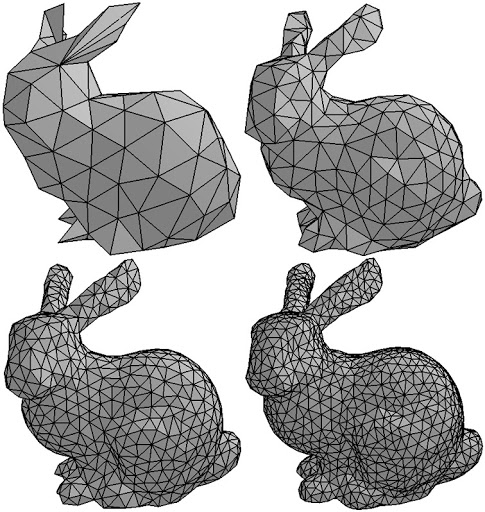

Freedom Project: 3D Modeling
3D Modeling is using a computer software to model certain objects. To make a 3D model you have to manipulate points in the program called vertices. You can do these things in free programs such as blender or other more professional paid programs. These vertices allow you to make the model whatever shape and size you want. You can then also apply textures to the models to complete it. This is how characters in games have colors.
To start a 3D Modeling career, you need to have problem solving skills. Usually 3D Modelers are either self-employed or Employees at certain companies. Also many 3D Modelers focus on 3D Animation. In order to get started you also need a 4 year degree as wella s a strong portfolio and professional network. 3D Modeling does make less compared to other jobs in the technolgy field but the demand for 3D Modelers are going up so expect more from this field.
To get started with 3D Modeling you need a program to work with. I recommend Blender since many people use it and it's free. It is also easy to find tutorials for Blender online so it's the easiest to pick up. With 3D Modeling you work digitally a lot so there won't be any physical work most of the time. One important thing to have while making 3D models is spatial awareness, you need to be able to visualize what you are going to make before starting on a project.
Even though 3D Modeling may seem like a career that doesn't have any distinction, there is actually different types of 3D Modeling depending on the industry you are working for and what they want. Some industries use polygon modeling which uses lower polygons making it cheaper and faster but it doesn't look as good. Polygons determine how much detail is in the 3D Model so with less polygons the model will look less polished.
3D Modeling may be good however there are many cons to it. 3D Modeling is very hard to start with and beginners may lose interest. There is also a lot of learn in the software you are using so it might be hard to start learning compared to other things.